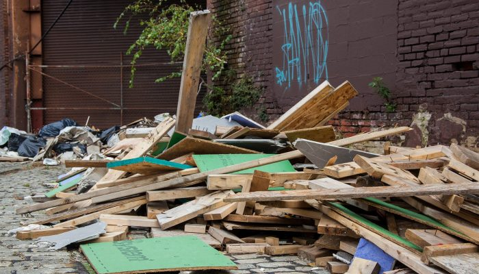

Clean up your Philadelphia
Narrative guide to exploring excess waste in Philly neighborhoods.
Chloe Alimurong MUSA 6110

Narrative guide to exploring excess waste in Philly neighborhoods.
Chloe Alimurong MUSA 6110

The most pressing issue of excess waste in Philadelphia appears to be illegal dumping. Christy Brady, the City Controller of Philadelphia, released a report on September 15, 2026 detailing the cost of illegal dumping in the city. It costs $619 per ton to clean up illegal dumping. According to the report, 14,000 tons are dumped annually, totaling to over $8 million. The city implemented an Illegal Dumping Task force in 2025 to target illegal dumpers by imposing fines and installing surveillance cameras.
However, excess waste in Philadelphia neighborhoods goes beyond illegal dump sites and also expresses itself as any form of waste on our streets and not in properly designated bins/areas.
In this narrative story map, we will explore the spatial extent of excess waste on the surrounding neighborhoods.
Residents are encouraged to report illegal dumping by calling 311 or filling out a form on the city of Philadelphia website. Each response records the location of illegal dump.
The hexagons on the map display these records group these incidents into small hexagons a few city blocks wide. As the color grows to a darker green, the more incidents that occur in that particular area. Scroll closer, and you can see the hexagons by neighborhood boundaries.
Kensington, Juniata Park and Port Richmond are neighborhoods with the highest number of reports for 2025 at 17,359 out of 207,000. This zipcode is also recorded to have the highest proportion of people living in poverty at 41.2%.
In 2022, Nick Russo explains in an article for The Philadelphia Citizen, a system of contractors dumping waste from construction sites into neighborhoods without sufficient patrolling. In our previous slide, neighborhoods like Kensington are known to have underlying issues with poverty rates and drug abuse, making it easier for illegal dumping activities to fall under the radar. Additionally, repeated littering and dumping of household items like furniture and mattresses are another major problem for underserved neighborhoods. A group called "Trash Academy" advocates for accounting these repeated records of waste through a crowd-source map you can find here.
Since we can't exactly pin the source of waste on a specific group of individuals or corporate entities, we can look at the alternatives for waste in place.
Designated landfills, transfer stations, and recycling centers are the recommended sites for dumping large amounts of waste, they also charge these entities per ton. This adds on to the inaccessibility driving construction companies to throw where it's convenient and under the radar. For everyday citizens, we can also see this as an opportunity for more sites to be designated and to prevent extra waste in landfills by recycling.
The layers you see populated on the map are:
Sanitation Convenience Centers as brown trash bags, places where residents can drop off household trash and recycling.
Permitted Landfills as black trash cans, places designated by the PA Dept. of Environmental Protection where municipal and/or residual waste disposal is permitted in facility or on land.
Recycling resources as purple recycle symbols, places to donate or recycle items.
As you zoom closer, Which neighborhoods have the most access, which dont?
As residents, we share a responsibility to keep Philadelphia clean. That includes where our waste goes and with proper designation. The map now shows the recycling diversion rate for 2025. The darker blue the neighborhood is, the higher recycle score and less waste sent to landfills.
Color inspiration from Color Brewer. AI (Claude, Sonnet 5) was used to debug code in this storymap.